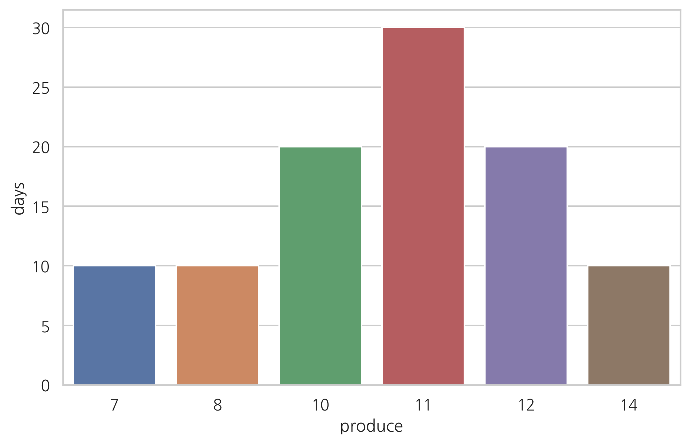
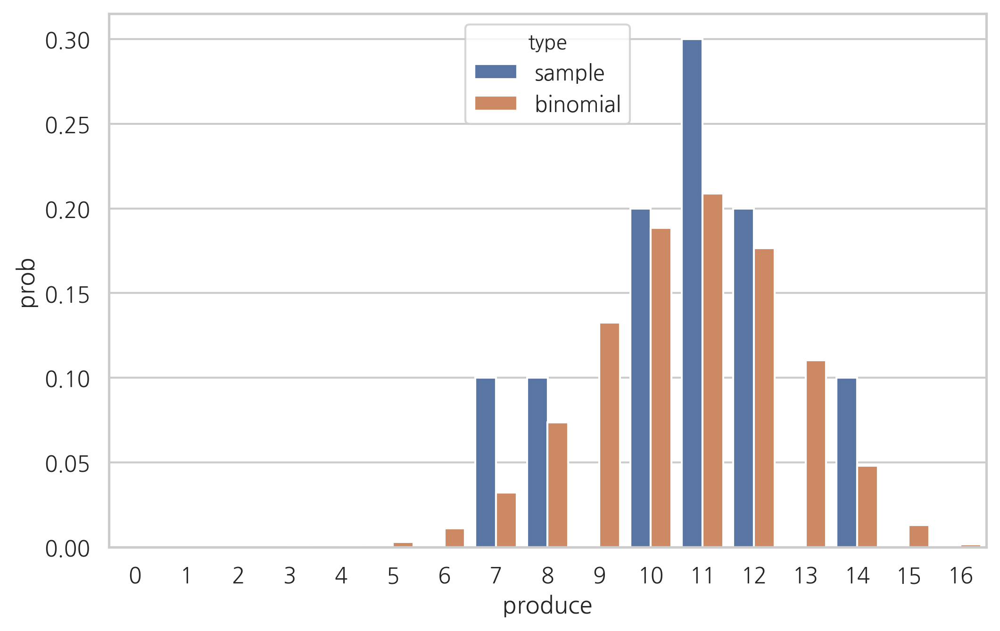

Test 2020-02-17¶
from sklearn.datasets import load_iris
iris = load_iris()
df = pd.DataFrame(iris.data, columns=iris.feature_names)
sy = pd.Series(iris.target, dtype="category")
sy = sy.cat.rename_categories(iris.target_names)
df['species'] = sy
df
| sepal length (cm) | sepal width (cm) | petal length (cm) | petal width (cm) | species | |
|---|---|---|---|---|---|
| 0 | 5.1 | 3.5 | 1.4 | 0.2 | setosa |
| 1 | 4.9 | 3.0 | 1.4 | 0.2 | setosa |
| 2 | 4.7 | 3.2 | 1.3 | 0.2 | setosa |
| 3 | 4.6 | 3.1 | 1.5 | 0.2 | setosa |
| 4 | 5.0 | 3.6 | 1.4 | 0.2 | setosa |
| ... | ... | ... | ... | ... | ... |
| 145 | 6.7 | 3.0 | 5.2 | 2.3 | virginica |
| 146 | 6.3 | 2.5 | 5.0 | 1.9 | virginica |
| 147 | 6.5 | 3.0 | 5.2 | 2.0 | virginica |
| 148 | 6.2 | 3.4 | 5.4 | 2.3 | virginica |
| 149 | 5.9 | 3.0 | 5.1 | 1.8 | virginica |
150 rows × 5 columns
x = df[df.species == "virginica"]["petal length (cm)"].values
bins = np.linspace(0, 10, 1001)
ns, _ = np.histogram(x, bins=bins)
sample_mean = np.mean(x)
sample_median = np.median(x)
mode_index = np.argmax(ns)
sample_mode = 0.5 * (bins[mode_index] + bins[mode_index + 1])
sns.distplot(x, bins=bins)
plt.title("표본평균, 표본중앙값, 표본최빈값의 차이")
plt.xlabel("x")
plt.legend()
plt.show()
No handles with labels found to put in legend.
기댓값과 분산¶
다음 표는 일간 생산량을 나타낸다. 일간 생산량의 표본 기댓값과 표본 분산, 표본 표준편차를 구하라.
(ref) Salatore p52
df = pd.DataFrame({"produce": [7, 8, 10, 11, 12, 14],
"days": [10, 10, 20, 30, 20, 10]},
columns=["produce", "days"])
df
| produce | days | |
|---|---|---|
| 0 | 7 | 10 |
| 1 | 8 | 10 |
| 2 | 10 | 20 |
| 3 | 11 | 30 |
| 4 | 12 | 20 |
| 5 | 14 | 10 |
2/3/180 * 180 *
0.0037037037037037034
sns.barplot(x="produce", y="days", data=df)
plt.show()

답: 10.6, 3.64, 1.91
통계량¶
통계량의 예를 드시오
order statistics
공분산과 상관계수¶
from sklearn.datasets import load_iris
X = load_iris().data
np.cov(X.T)
array([[ 0.68569351, -0.042434 , 1.27431544, 0.51627069],
[-0.042434 , 0.18997942, -0.32965638, -0.12163937],
[ 1.27431544, -0.32965638, 3.11627785, 1.2956094 ],
[ 0.51627069, -0.12163937, 1.2956094 , 0.58100626]])
베르누이 분포¶
\(\mu=0.1\)인 베르누이 분포에서 10,000개의 표본을 만들었다.
(1) 이 표본의 평균값의 기댓값과 분산은?
(2) 95%의 확률로 \(\mu\)값이 있는 구간은?
이항 분포¶
df["prob"] = df["days"] / df["days"].sum(axis=0)
df["type"] = "sample"
rv = sp.stats.binom(n=16, p=0.67)
df2 = pd.DataFrame({"produce": np.arange(17), "prob": rv.pmf(np.arange(17)), "type":"binomial"})
df2
| produce | prob | type | |
|---|---|---|---|
| 0 | 0 | 1.977985e-08 | binomial |
| 1 | 1 | 6.425455e-07 | binomial |
| 2 | 2 | 9.784216e-06 | binomial |
| 3 | 3 | 9.270297e-05 | binomial |
| 4 | 4 | 6.116992e-04 | binomial |
| 5 | 5 | 2.980643e-03 | binomial |
| 6 | 6 | 1.109462e-02 | binomial |
| 7 | 7 | 3.217919e-02 | binomial |
| 8 | 8 | 7.350019e-02 | binomial |
| 9 | 9 | 1.326468e-01 | binomial |
| 10 | 10 | 1.885193e-01 | binomial |
| 11 | 11 | 2.087734e-01 | binomial |
| 12 | 12 | 1.766139e-01 | binomial |
| 13 | 13 | 1.103322e-01 | binomial |
| 14 | 14 | 4.800167e-02 | binomial |
| 15 | 15 | 1.299439e-02 | binomial |
| 16 | 16 | 1.648910e-03 | binomial |
df3 = pd.concat([df, df2], axis=0)
df3
| days | pro | prob | produce | type | |
|---|---|---|---|---|---|
| 0 | 10.0 | 0.1 | 1.000000e-01 | 7 | sample |
| 1 | 10.0 | 0.1 | 1.000000e-01 | 8 | sample |
| 2 | 20.0 | 0.2 | 2.000000e-01 | 10 | sample |
| 3 | 30.0 | 0.3 | 3.000000e-01 | 11 | sample |
| 4 | 20.0 | 0.2 | 2.000000e-01 | 12 | sample |
| 5 | 10.0 | 0.1 | 1.000000e-01 | 14 | sample |
| 0 | NaN | NaN | 1.977985e-08 | 0 | binomial |
| 1 | NaN | NaN | 6.425455e-07 | 1 | binomial |
| 2 | NaN | NaN | 9.784216e-06 | 2 | binomial |
| 3 | NaN | NaN | 9.270297e-05 | 3 | binomial |
| 4 | NaN | NaN | 6.116992e-04 | 4 | binomial |
| 5 | NaN | NaN | 2.980643e-03 | 5 | binomial |
| 6 | NaN | NaN | 1.109462e-02 | 6 | binomial |
| 7 | NaN | NaN | 3.217919e-02 | 7 | binomial |
| 8 | NaN | NaN | 7.350019e-02 | 8 | binomial |
| 9 | NaN | NaN | 1.326468e-01 | 9 | binomial |
| 10 | NaN | NaN | 1.885193e-01 | 10 | binomial |
| 11 | NaN | NaN | 2.087734e-01 | 11 | binomial |
| 12 | NaN | NaN | 1.766139e-01 | 12 | binomial |
| 13 | NaN | NaN | 1.103322e-01 | 13 | binomial |
| 14 | NaN | NaN | 4.800167e-02 | 14 | binomial |
| 15 | NaN | NaN | 1.299439e-02 | 15 | binomial |
| 16 | NaN | NaN | 1.648910e-03 | 16 | binomial |
sns.barplot(x="produce", y="prob", hue="type", data=df3)
plt.show()

모멘트 방법¶
df = pd.DataFrame({"produce": [7, 8, 10, 11, 12, 14],
"days": [10, 10, 20, 30, 20, 10]},
columns=["produce", "days"])
df
| produce | days | |
|---|---|---|
| 0 | 7 | 10 |
| 1 | 8 | 10 |
| 2 | 10 | 20 |
| 3 | 11 | 30 |
| 4 | 12 | 20 |
| 5 | 14 | 10 |
이항분포의 \(N, \mu\)를 모멘트 방법으로 추정하라.
df["p"] = df.days/df.days.sum()
mean = (df.produce * df.p).sum()
mean
10.6
np.average(df.produce, weights=df.p)
10.600000000000001
var = ((df.produce - mean)**2 * df.p).sum()
var
3.6400000000000006
np.average((df.produce - mean)**2, weights=df.p)
3.640000000000001
\[ N\mu = 10.6 \]
\[ N\mu(1-\mu) = 3.64 \]
\[ {N\mu(1-\mu) \over N\mu} = 1-\mu = 3.64 / 10.6 \]
\[ \mu = 0.66 \]
\[ N = 10.6 / \mu \approx 16 \]
MLE¶
이항분포의 \(N, \mu\)에 대한 가능도를 그리고 최대가능도추정법으로 \(N, \mu\)을 추정하라.